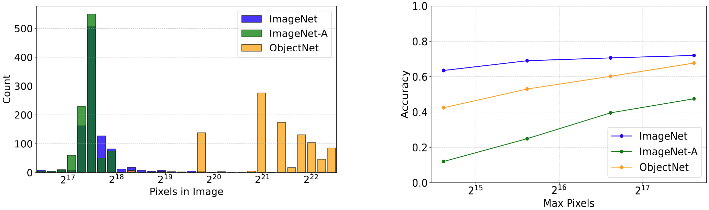

Visual embedding models excel at zero-shot tasks like visual retrieval and classification. However, these models cannot be used for tasks that contain ambiguity or require user instruction. These tasks necessitate a multimodal embedding model, which outputs embeddings that combine visual and natural language input. Existing CLIP-based approaches embed images and text independently, and fuse the result. We find that this results in weak interactions between modalities, and poor user control over the representation. We introduce ABC, an open-source multimodal embedding model that uses a vision-language model backbone to deeply integrate image features with natural language instructions. ABC achieves best-for-size performance on MSCOCO image-to-text retrieval and is the top performing model on classification and VQA tasks in the Massive Multimodal Embedding Benchmark. With a strongly unified vision-language representation, ABC can use natural language to solve subtle and potentially ambiguous visual retrieval problems. To evaluate this capability, we design CtrlBench, a benchmark that requires interleaving textual instructions with image content for correct retrieval. ABC advances the state of multimodal embeddings by offering both high-quality representations and flexible natural language control.
ABC is designed to give the user maximum control over how images are represented. ABC is trained to be able to use natural language instructions to represent specific aspects of images. The key behind ABC's training is that we pretrain the model using a large dataset of difficult embedding samples, where each batch contains many candidates that are relevant but not quite correct (left). The pretrained model is therefore able to generate embeddings that capture subtle differences. After a short finetuning stage, the model ideal for tasks like VQA, where differences in user instructions result in different correct answers (right).
Nothing beats trying it yourself! Just clone our repo and use the script below (demo.py in the repository) and get started creating embeddings! To recreate our model or do additional multimodal instruction finetuning on our pretrained base, checkout our repo for steps.
import torch
base_model = "Qwen/Qwen2-VL-7B-Instruct"
pretrain_adapter = "TIGER-Lab/ABC-Qwen2VL-Pretrain"
instruction_adapter = "TIGER-Lab/ABC-Qwen2VL-Instruct"
from functional.embed_function import get_embed_function
embed_function = get_embed_function(base_model, pretrain_adapter, instruction_adapter)
what_is_left_animal = embed_function(image="./examples/dog_and_cat.jpg", text="what is the animal on the left?")
what_is_right_animal = embed_function(image="./examples/dog_and_cat.jpg", text="what is the animal on the right?")
dog = embed_function(text="a dog")
cat = embed_function(text="a cat")
is_dog = torch.matmul(what_is_left_animal,dog.t())
is_cat = torch.matmul(what_is_left_animal,cat.t())
if is_dog > is_cat:
print("the animal on the left is a dog")
else:
print("the animal on the left is a cat")
is_dog = torch.matmul(what_is_right_animal,dog.t())
is_cat = torch.matmul(what_is_right_animal,cat.t())
if is_dog > is_cat:
print("the animal on the right is a dog")
else:
print("the animal on the right is a cat")
We evaluate on our model on zero-shot multimodal VQA, classification and retrieval tasks. Our model si the best performing model at both multimodal classification and VQA on the MMEB (Massive Multimodal Embedding Benchmark). Additional evaluations can be found within the paper.
Many CLIP embedding models only support 224x224 as the input resolution. We find that downscaling images before embeddings results in significant performence degradation in some tasks (for example: ImageNet-A). Therefore, we support image embedding with dynamically chosen resolutions, allowing the user to tradeoff between compute and embedding quality.
{}